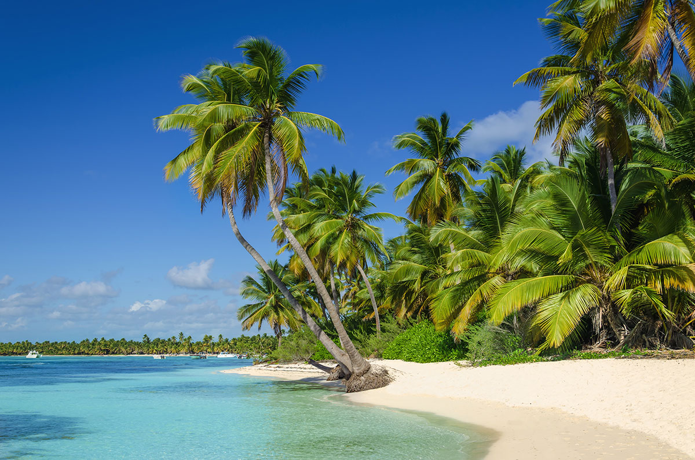
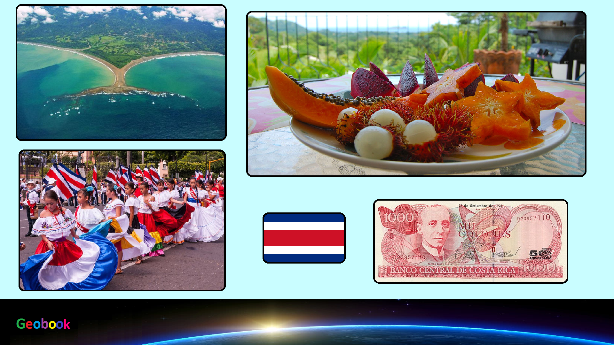

×

Costa Rica
Климат
Субэкваториальный. На плато средняя температура в течение всего года держится на уровне +22 C, в горных районах может опускаться до +10 (в зимний период возможны ночные заморозки до -5 С). В низменных местах, на побережье Карибского моря и на юге тихоокеанского побережья, дневная температура колеблется от +27 С до +33 С круглый год. Ночью незначительно прохладнее, чем днем.
Осадков выпадает очень много - от 1000 мм. в год на тихоокеанском побережье, до 3000-5000 мм. в год на побережье Карибского моря. По распределению осадков и выделяют климатические зоны страны. На Карибском побережье и в южной части тихоокеанского берега дожди идут почти постоянно с мая по ноябрь, с максимумом в период с сентября по октябрь, с коротким сухим периодом с декабря по апрель. При этом с мая по август дождей относительно немного.
В центральных районах страны намного суше, а характер выпадающих осадков сильно зависит от направления ветра. На наветренных склонах гор может выпадать до 5000 мм. осадков, а межгорные котловины получают не более 1500 мм. дождя в год. Северная часть тихоокеанского побережья - самая сухая часть страны, дожди здесь идут, в основном, весной и осенью. В любое время года ночи обычно безоблачны, а дождь, как по расписанию, начинается после обеда.
____
